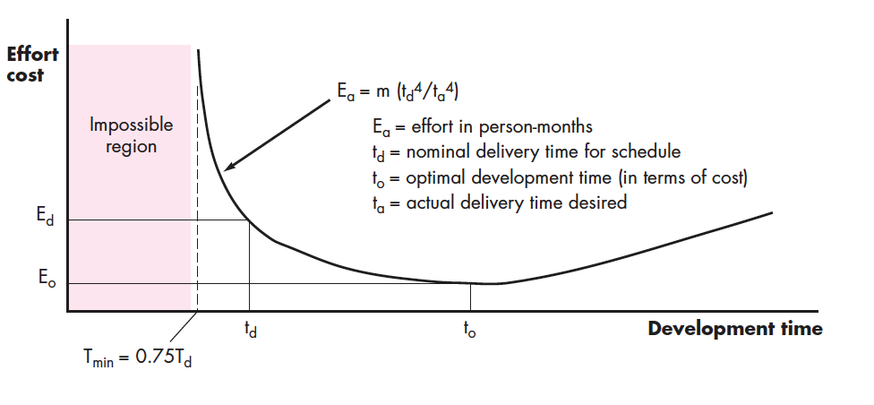
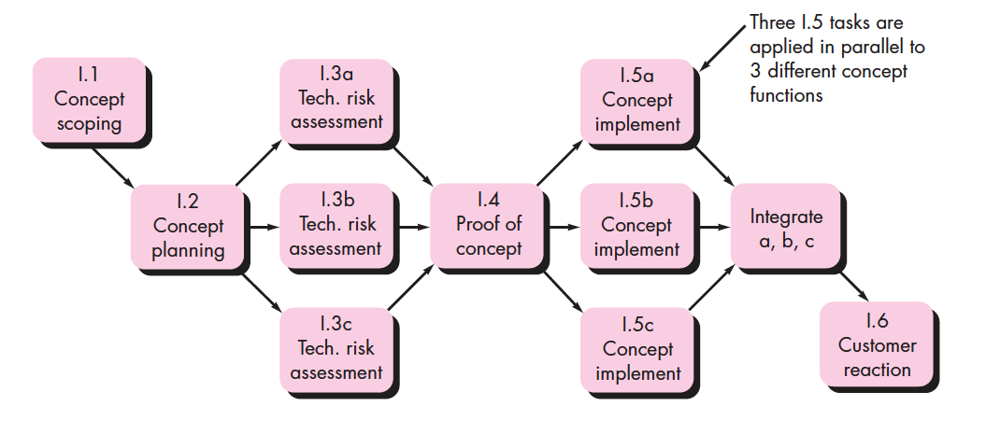
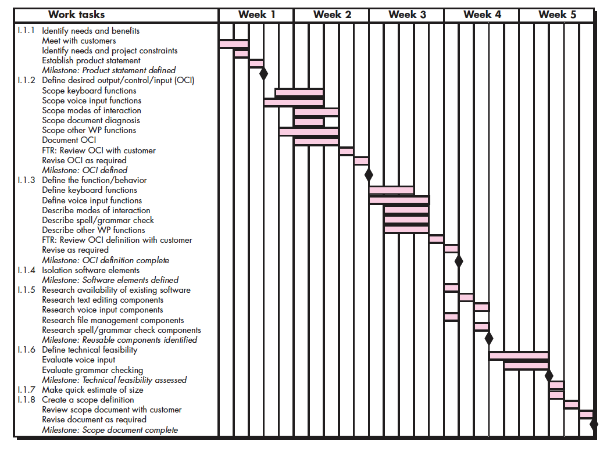
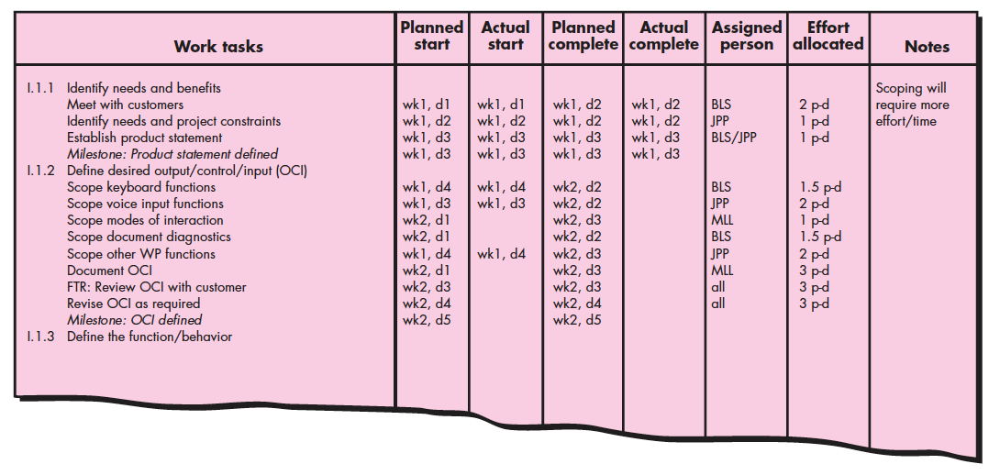
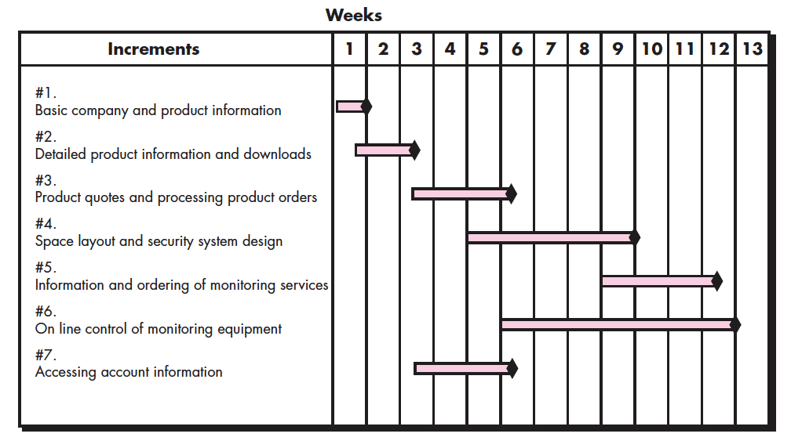

Software Project Scheduling
Summary based on Pressman & Maxim's Software Engineering: A Practitioner's Approach.
1. Basic Scheduling Concepts
Projects fall behind schedule due to unrealistic deadlines, changing customer requirements, underestimation of effort, unconsidered risks, or poor tracking.
- Managing Unrealistic Deadlines: Perform detailed historical estimates, propose an incremental strategy, and present options clearly.
- Critical Path: The sequence of tasks that determines overall project duration. If critical tasks fall behind, the completion date slips.
2. People, Effort, & The PNR Curve
Adding people to a late project increases communication paths and delay. The Putnam-Norden-Rayleigh (PNR) Curve demonstrates the relationship between effort applied and delivery time.

- Impossible Region: Compressing delivery time beyond ~$0.75t_d$ drastically increases failure risk.
- 40-20-40 Rule: Recommended effort distribution — 40% Analysis/Design, 20% Coding, 40% Testing.
3. Task Networks & Scheduling Tools
A task network graphically represents task flow, sequence, and dependencies across a time line.

Schedules are typically visualized using Time-Line (Gantt) Charts and Project Tables.


4. WebApp Scheduling & Earned Value Analysis
WebApp project schedules evolve from macroscopic increment projections into detailed task breakdowns.

Earned Value Analysis (EVA): Quantitative metric evaluating schedule performance using $SPI = \frac{BCWP}{BCWS}$.